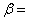
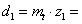
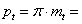
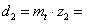

Моделирање цилиндричних зупчаника, склопа и израда цртежа

Угао поклапања међузубља са зупцем гоњеног зупчаника:
0.05578 rad
3.196 °
Ширину
погонског
зупчаника смо усвојили у завршном прорачуну:  80
80 
Угао нагиба бочне линије зубаца на подеоном кругу је задан по поставци задатка:  5 °
Пречник подеоне кружнице погонског зупчаника одређен у завршном прорачуну:
 125.477
Угао половине корака погонског зупчаника:
0.1256637 rad
7.2 °
Подеони корак у главном пресеку одређен у завршном прорачуну:
 15.768
Полупречник кинематске кружнице смо одредили у завршном прорачуну:
 63.691
63.691

Угао поклапања зупца са међузубљем погонског зупчаника:
0.026495 rad
1.518 °
Ширину
гоњеног
зупчаника смо усвојили у завршном прорачуну:  76
76
Угао нагиба бочне линије зубаца на подеоном кругу је задан по поставци задатка: 5 °
Пречник подеоне кружнице гоњеног зупчаника одређен у завршном прорачуну:
 250.955
Полупречник кинематске кружнице смо одредили у завршном прорачуну:
 127.382
127.382
Приликом моделирања склопа редуктора, потребно је обезбедити да се међузубље погонског зупчаника поклапа са озубљењем гоњеног зупчаника и обрнуто!
Угао поклапања међузубља са зупцем гоњеног зупчаника:
3.196 °
Угао поклапања зупца са међузубљем погонског зупчаника:
1.518 °
Полупречнике кинематских кружница смо одредили у завршном прорачуну:
63.691
127.382
Осно растојање зупчаника смо израчунали у завршном прорачуну:
 191.074
191.074